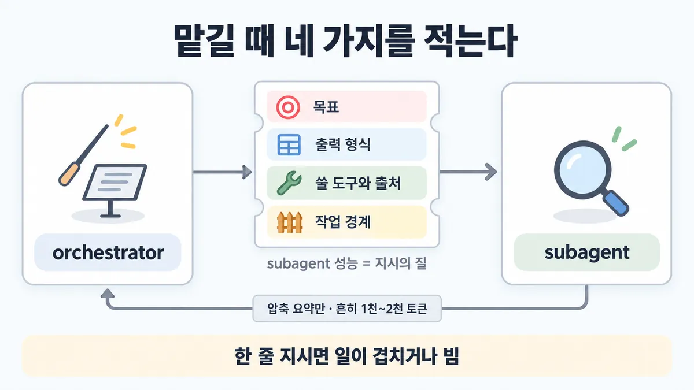
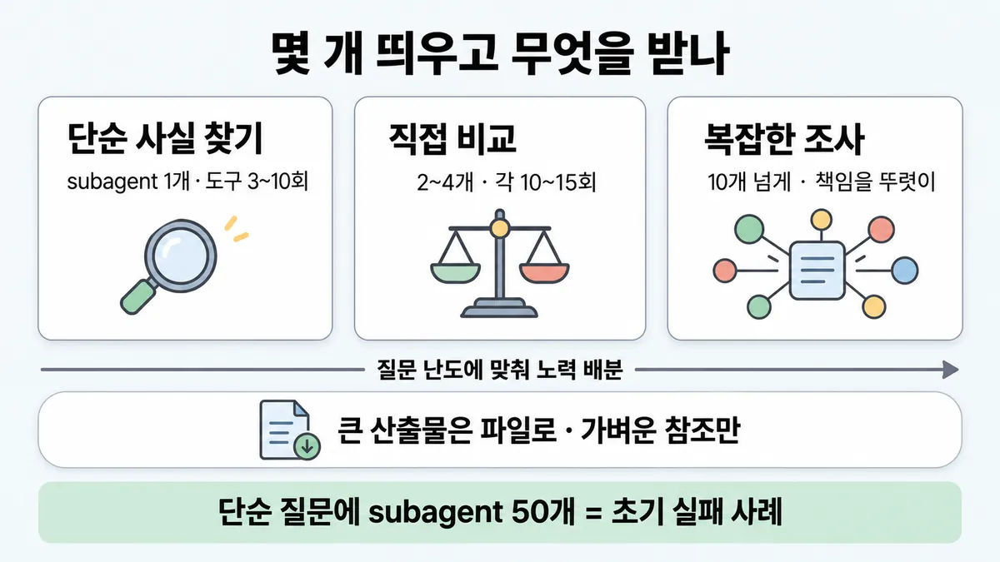

■ orchestrator-worker 위임
왜 배우나 — 시험이 요구하는 것
시험 목표 1.4 멀티 에이전트와 조율 · D1 설계 17%Design multi-agent systems and orchestration strategies
이 개념으로 푸는 판단 (할 수 있어야 하는 것)
- 1.4② 지휘자는 일꾼에게 무엇을 넘겨야 하나? — 위임 지시와 일의 양 배분
- 1.5① 미리 쪼갤 수 있나, 실행하며 쪼개야 하나? — 정적 분해(코드가 미리 나눔 — 체이닝·나눠 돌리기) vs 동적 분해(지휘자가 입력을 보고 나눔)
- 2.4② 긴 에이전트 작업에서 창이 차오른다 — 무엇을 남기고 무엇을 밖으로 빼나? — 컨텍스트 관리 수단 (사전 로드 vs 그때 가져오기 · 컴팩션 · 구조화 메모 · 서브에이전트 요약)
한눈에
멀티로 가기로 했으면 "어떻게 맡기나". orchestrator(lead agent · 지휘자)가 질문을 쪼개 subagent(일꾼)마다 지시를 적어 주고, subagent 는 자기 컨텍스트에서 찾은 뒤 압축해 돌려줌 ✓ 확인
쓸지 말지는 ◆ 단일 vs 멀티 에이전트. 여기는 지시 · 개수 · 결과 받기 ✓ 확인
비유 Jira 티켓에 완료 조건·범위·산출물 형식을 적는 것. "알아서 조사" 티켓 = 중복 작업


ELI5
반장이 친구들에게 모둠 숙제를 나눠 주는 거예요.
- "숙제 해 와" 한마디면 둘이 같은 걸 해 와요.
- "너는 무엇을, 어떤 모양으로, 어디서 찾아, 여기까지만" 이라고 말해 줘야 해요.
- 쉬운 숙제에 친구 열 명을 부르면 시끄럽기만 해요.
- 친구들은 찾은 걸 한 장으로 줄여서 줘요. 큰 그림은 사물함에 두고 "사물함 3번"이라고만 말해요.
개념 설명
원리
왜 지시를 적어야 하나
- subagent(일꾼)는 orchestrator(지휘자)의 대화를 못 봄. 받는 건 orchestrator 가 쓴 지시뿐 (Agent SDK : Agent 도구 프롬프트 문자열뿐).
- 그래서 지시의 질 = subagent 의 성능. 목표·출력 형식·도구와 출처·경계 중 하나가 빠지면 겹치거나 비어 있음.
왜 개수를 정해 줘야 하나
- 에이전트는 알맞은 노력을 스스로 잘 못 정함 → 단순 질문에 subagent 50개 같은 과잉.
- 멀티는 토큰을 채팅의 약 15배 씀 → subagent 수 = 비용. 난도별 규모 규칙을 프롬프트에 박음.
왜 압축해서 받나
- 검색의 본질 = 압축. subagent 가 각자 컨텍스트 창에서 수만 토큰을 뒤지고 핵심만 돌려줘야 orchestrator 컨텍스트 창이 버팀.
- orchestrator 컨텍스트 창도 유한 (연구 글 : 20만 넘으면 잘림 → 계획은 메모리에 저장).
- 코드·보고서처럼 요약하면 망가지는 건 파일로 두고 참조만 → orchestrator 를 거치며 생기는 말 전달 놀이(거쳐 갈수록 내용이 빠짐)을 피함.
규칙과 판단


갈림길
① 지시에 무엇을 [1.4②]
맡김
각 subagent 의 성능 = 그 지시의 질 ✓ 확인
겹치거나 비게 됨
일이 겹치거나 비거나 필요한 걸 못 찾음 ✓ 확인
프롬프트에 직접 적음
부모 대화는 안 넘어감, Agent 도구 프롬프트 문자열뿐 → 파일 경로·오류 메시지·결정은 프롬프트에 직접 적음 ✓ 확인
② 몇 개 띄우나 [1.4②]
1개
도구 호출 3~10회 ✓ 확인
2~4개
각 10~15회 ✓ 확인
10개 넘게
책임을 뚜렷이 나눔 ✓ 확인
③ 결과를 어떻게 [1.4②] [2.4②]
압축 요약
압축 요약만(흔히 1천~2천 토큰) ✓ 확인
파일 + 참조
외부 저장소에 직접 저장, 가벼운 참조만 ✓ 확인
검증 서브에이전트
산출물 + 뚜렷한 성공 기준(success criteria) + 검증 도구 · "전체 테스트를 반드시 돌려라"를 명시 ✓ 확인
흐름
그림 속 이름·금액·시간·토큰 수는 예시예요. 공식 한도·동작은 카드 본문 값이 기준.
장면 글로 보기
칸 : orchestrator → subagents → 파일 저장소
규칙 (subagents) : 목표 · 출력 형식 · 쓸 도구와 출처 · 작업 경계
질문 : subagent 에게 무엇을 적어 줘야 할까?
① 네 가지를 적어 맡김 ✓
- 시작 : orchestrator — 말 : “반도체 부족 사태를 정리해 줘”
- 위임 : orchestrator → subagents : 네 가지를 적음 — 쪽지 : 목표: 2025 공급망 병목 / 형식: 표 5행 + 출처 / 도구: 웹 검색 · 공시 / 경계: 2021 자동차 칩 제외
- 조사 : subagents : 자기 컨텍스트에서 수만 토큰 탐색 — 쪽지 : 검색 12회 / 읽은 양 35,000 토큰
- 요약 : subagents → orchestrator : 압축 요약만 — 쪽지 : 요약 1,500 토큰 / 병목 3곳 + 출처 4개
- 끝 : subagent 는 자기 컨텍스트에서 찾은 뒤 압축해 돌려줌 (흔히 1천~2천 토큰)
② 한 줄 지시 ≠
- 시작 : orchestrator — 말 : “반도체 부족 사태를 정리해 줘”
- 위임 : orchestrator → subagents : 세 subagent 에게 같은 한 줄 — 쪽지 : "research the / semiconductor shortage" / 목표·형식·경계 없음
- 조사 : subagents : 셋 중 둘이 같은 걸 조사 — 쪽지 : A: 2021 자동차 칩 위기 / B: 2025 공급망 / C: 2025 공급망 (B와 겹침)
- 요약 : subagents → orchestrator : 겹친 요약 — 쪽지 : 요약 3개 중 2개가 같은 내용 / 빠진 쪽은 아무도 안 봄
- 끝 : 한 줄 지시면 일이 겹치거나 비거나 필요한 걸 못 찾음
③ 큰 산출물은 파일로 ✓
- 시작 : orchestrator — 말 : “공급망 비교 보고서도 만들어 줘”
- 위임 : orchestrator → subagents : 산출물 형식까지 적음 — 쪽지 : 목표: 공급망 비교 보고서 / 형식: 파일로 저장
- 저장 : subagents → 파일 저장소 : 외부 저장소에 직접 저장 — 쪽지 : report.md (18쪽) / chart.png
- 참조 : subagents → orchestrator : 가벼운 참조만 — 쪽지 : files/report.md / "병목 3곳 · 18쪽"
- 끝 : 말 전달 놀이(거쳐 갈수록 내용이 빠짐)·복사에 드는 토큰을 줄임
규칙 원문 ①②③ (갈림길로 그린 규칙)
-
위임 지시 네 가지 : 목표 · 출력 형식 · 쓸 도구와 출처 · 작업 경계. 없으면 일이 겹치거나 비거나 필요한 걸 못 찾음 ✓ 확인 [1.4②]
예 : 'research the semiconductor shortage' 한 줄 → 하나는 2021 자동차 칩 위기, 둘은 2025 공급망을 똑같이 조사 ✓ 확인
각 subagent 의 성능 = 그 지시의 질. 단일 에이전트 프롬프트 요령이 subagent 시스템 프롬프트에도 그대로 ✓ 확인
지시 = 경직된 규칙보다 좋은 경험칙(heuristics). 최선의 프롬프트 = 분업 · 문제 푸는 법 · 노력 예산을 정한 협업 틀 ✓ 확인
orchestrator 는 extended thinking 으로 먼저 계획 : 맞는 도구 · 질문 난도 · subagent 수 · subagent 마다 역할 ✓ 확인
Agent SDK : 서브에이전트는 새 컨텍스트로 시작 — 부모 대화는 안 넘어감, Agent 도구 프롬프트 문자열뿐 → 파일 경로·오류 메시지·결정은 프롬프트에 직접 적음 ✓ 확인 (fork 는 예외 — 부모 대화를 물려받음)
-
노력 배분 : 에이전트는 알맞은 노력을 스스로 잘 못 정함 → 질문 난도별 규모 규칙을 프롬프트에 ✓ 확인 [1.4②]
질문 subagent 도구 호출 단순 사실 찾기 1개 3~10회 직접 비교 2~4개 각 10~15회 복잡한 조사 10개 넘게 (책임을 뚜렷이 나눔) — 초기 실패 : 단순 질문에 subagent 50개 · 없는 출처를 끝없이 찾음 · 과한 업데이트로 서로 방해 ✓ 확인
병렬 : orchestrator 는 subagent 3~5개를 동시에, subagent 는 도구 3개+ 를 동시에 → 복잡한 질문의 조사 시간 최대 90% 단축 ✓ 확인
모델 조합 예 : orchestrator Opus 4 + subagent Sonnet 4 (연구 글) ✓ 확인
Agent SDK 상한 : 서브 깊이 기본 3층 · 동시 20개 · 비용 상한
max_budget_usd(기본 없음) (2026-09-28 조회) ✓ 확인 -
결과 받기 : subagent 는 자기 컨텍스트에서 수만 토큰 탐색 → 압축 요약만(흔히 1천~2천 토큰). 검색의 본질 = 압축 ✓ 확인 [1.4②] [2.4②]
1천~2천은 "흔히"(경험치) — 고정 한도 아님 ✓ 확인
코드·보고서·시각화처럼 큰 산출물 → subagent 가 외부 저장소에 직접 저장, 가벼운 참조만 orchestrator 로 → 말 전달 놀이·복사에 드는 토큰을 줄임 ✓ 확인
orchestrator 계획은 메모리에 저장 : 컨텍스트가 20만 토큰을 넘으면 잘리니까 ✓ 확인
검증 서브에이전트 = 산출물 + 뚜렷한 성공 기준 + 검증 도구. 한두 개 테스트만 돌리고 통과로 적는 지름길 → "전체 테스트를 반드시 돌려라"를 명시 ✓ 확인
Managed Agents : 샌드박스·파일시스템·vault 는 공유, 도구·MCP·컨텍스트는 안 공유 · 스레드는 영속(전에 부른 subagent 에게 후속 메시지 → 앞 턴 유지) · 명단(roster) 고유 에이전트 최대 20 · 위임은 1단계만 ✓ 확인
더 깊이 : 판단 규칙 · 상황 변수 (설명)
판단 규칙
| 조건 | 답 | 등급 | 근거 |
|---|---|---|---|
| subagent 에게 일을 맡김 | 목표 · 출력 형식 · 도구와 출처 · 작업 경계를 적음 | ✓ 확인 | multi-agent-research-system en 44줄 |
| subagent 둘이 같은 검색을 되풀이 · 빈 곳이 생김 | 위임(delegation) 지시(특히 경계)를 자세히 | ✓ 확인 | multi-agent-research-system en 44줄 |
| 단순 사실 질문 | subagent 1개 · 도구 호출 3~10회 | ✓ 확인 | multi-agent-research-system en 45줄 |
| 직접 비교 | subagent 2~4개 · 각 10~15회 | ✓ 확인 | multi-agent-research-system en 45줄 |
| 복잡한 조사 | subagent 10개 넘게, 책임을 뚜렷이 나눔 | ✓ 확인 | multi-agent-research-system en 45줄 |
| subagent 결과를 orchestrator 에게 | 압축 요약 (흔히 1천~2천 토큰) | ✓ 확인 | effective-context-engineering en 107줄 |
| 결과가 코드·보고서·시각화 | 외부 저장소에 쓰고 참조만 | ✓ 확인 | multi-agent-research-system en 100줄 |
| 서브에이전트가 알아야 할 경로·오류·결정 | Agent 도구 프롬프트에 직접 적음 | ✓ 확인 | agent-sdk-subagents en 388줄 |
| 산출물을 따로 검증 | 검증 서브에이전트 : 산출물 + 성공 기준(success criteria) + 도구 + "전체 테스트 필수" | ✓ 확인 | building-multi-agent-systems en 266·349~356줄 |
상황 변수
| 변수 | 값 | 답 쪽 | 등급 | 근거 |
|---|---|---|---|---|
| 질문 난도 | 단순 / 비교 / 복잡 | 1개 / 2~4개 / 10개+ | ✓ 확인 | 판단 규칙 3~5 |
| subagent 탐색량 | subagent 당 수만 토큰 | 요약만 받아야 orchestrator 컨텍스트 창이 버팀 | 계산 | 뒤집히는 때 1 |
| 결과 모양 | 짧은 찾은 내용 | orchestrator 로 요약 | ✓ 확인 | effective-context-engineering en 107줄 |
| 결과 모양 | 코드·보고서처럼 길고 구조 있음 | 파일 + 참조 | ✓ 확인 | multi-agent-research-system en 100줄 |
| orchestrator 모델 | 유능함(Opus 4.5 급) | subagent 결과를 직접 평가해도 됨 | ✓ 확인 | 뒤집히는 때 3 |
| orchestrator 모델 | 덜 유능 · 검증에 특수 도구 필요 · 명시 검증 지점이 필요 | 검증 서브에이전트 | ✓ 확인 | building-multi-agent-systems en 260줄 |
| 속도 | 순차 검색이 너무 느림 | subagent 3~5개 동시 · subagent 는 도구 3개+ 동시 | ✓ 확인 | multi-agent-research-system en 50줄 |
| 권한 | 부모가 bypassPermissions |
서브도 bypass — 서브 정의로 못 좁힘 | ✓ 확인 | agent-sdk-permissions en 308줄 (2026-09-28 조회) |
연습 문제
조사 에이전트의 orchestrator 가 "반도체 부족 사태" 질문을 subagent 3개에 나눠 맡기며 셋 모두에게 'research the semiconductor shortage' 한 줄만 보낸다한 줄 지시. 팀은 "유능한 모델이니 알아서 나눠 할 것"이라 본다. 이 위임(delegation)의 결과는?
시험 대비
함정
- "subagent 지시는 짧게 두고 알아서 판단하게" → 한 줄 지시 = 일이 겹치거나 비어 있음 ✓ 확인
- "subagent 결과를 전부 orchestrator 대화로 복사" → 압축 요약 · 큰 산출물은 외부 저장소 + 가벼운 참조 ✓ 확인
- "subagent 가 많을수록 철저" → 단순 사실 1개·3~10회. 초기 50개가 실패 사례 ✓ 확인
- "서브에이전트는 부모가 본 걸 다 안다" → 부모 대화는 안 넘어감, Agent 도구 프롬프트 문자열뿐 ✓ 확인
- "요약 한도는 1~2천 토큰" → "흔히"일 뿐 ✓ 확인
- "부모가
bypassPermissions여도 서브는 AgentDefinition 의 permissionMode 로 좁힘" → 부모가 bypass 면 서브도 bypass (좁히는 건 부모가 default·dontAsk·plan 일 때만) ✓ 확인 (2026-09-28 조회) - 역할별로 나눠 맡김(기획·구현·테스트·리뷰) → ◆ 단일 vs 멀티 에이전트 의 나누는 법
신호
"Each subagent needs an objective, an output format, guidance on the tools and sources to use, and clear task boundaries."
"Without detailed task descriptions, agents duplicate work, leave gaps, or fail to find necessary information."
"Scale effort to query complexity."
"Simple fact-finding requires just 1 agent with 3-10 tool calls, direct comparisons might need 2-4 subagents with 10-15 calls each, and complex research might use more than 10 subagents with clearly divided responsibilities."
"returns only a condensed, distilled summary of its work (often 1,000-2,000 tokens)."
"Subagents call tools to store their work in external systems, then pass lightweight references back to the coordinator."
"The only content you pass from parent to subagent is the Agent tool’s prompt string"
더 깊이 : 뒤집히는 때 · 오답 재료 (설명)
뒤집히는 때
1. 요약 대신 원문을 넘기면 orchestrator 가 터질 때
- 조건 : 복잡한 조사에 subagent 12개, subagent 마다 3만 5천 토큰을 읽음.
- 계산 : 원문 복사 = 12 × 3만 5천 = 42만 토큰 → orchestrator 컨텍스트 창 20만을 넘김(연구 글 기준에선 잘림). 요약(subagent 당 1천 5백) = 1만 8천 토큰.
- 판단 : "정보를 잃지 않게 전부 넘기기"가 오히려 orchestrator 컨텍스트 창을 넘겨 계획을 잃음. 압축이 기본, 요약하면 망가지는 산출물만 파일 + 참조.
- 전제 : 1천 5백은 공식 "흔히 1천~2천"의 가운데 값을 고른 것 · 20만은 연구 글 시점의 컨텍스트 창.
- 등급 : 계산
- 근거 : multi-agent-research-system en 37·100줄 · effective-context-engineering en 107줄
2. "자세한 지시"가 오히려 나쁠 때
- 조건 : orchestrator 가 subagent 마다 검색어 순서·출처 목록을 한 줄씩 못 박아 고정함.
- 판단 : 공식이 요구하는 건 목표·형식·도구 안내·경계이지 경직된 절차가 아님. 공식 전략 = 경직된 규칙보다 좋은 경험칙("넓게 시작해서 좁혀라" 등). 과하게 고정하면 subagent 가 새 발견에 맞춰 방향을 못 바꿈.
- 등급 : ✓ 확인 (경험칙 원칙) · "고정하면 방향을 못 바꾼다"는 추론
- 근거 : multi-agent-research-system en 48·52줄
3. 검증 서브에이전트가 필요 없을 때
- 조건 : orchestrator 가 Opus 4.5 급 이상이고, 검증에 특수 도구가 필요 없음.
- 판단 : 유능한 orchestrator 는 subagent 결과를 직접 평가할 수 있음. 검증 서브에이전트는 orchestrator 가 덜 유능하거나, 특수 도구가 필요하거나, 명시적 검증 지점을 강제할 때.
- 등급 : ✓ 확인
- 근거 : building-multi-agent-systems en 260줄
4. subagent 수를 늘려야 할 때 — 비용으로 본 경계
- 조건 : 직접 비교 질문(제품 3개 비교)에 subagent 3개 × 도구 12회 = 36회. 같은 질문을 subagent 1개로 돌리면 한 컨텍스트 창에 36회 결과가 쌓임.
- 판단 : 규모 규칙은 난도가 정함. 비교 질문은 2~4개가 공식 범위 — 1개로 줄이면 한 컨텍스트 창에 다 쌓이고, 10개로 늘리면 조율 비용만 늚.
- 등급 : ✓ 확인 (범위) · 36회 예는 새로 고른 것
- 근거 : multi-agent-research-system en 45줄
오답 재료
| 오답 | 왜 끌리나 | 왜 틀리나 | 등급 | 근거 |
|---|---|---|---|---|
| "subagent 지시는 짧게 두고 알아서 판단하게" | 유능한 모델은 알아서 할 듯 | 한 줄 지시 → 겹침·빈틈 (반도체 예) | ✓ 확인 | multi-agent-research-system en 44줄 |
| "subagent 결과를 전부 orchestrator 대화로 복사" | 정보 손실이 없을 듯 | 압축이 핵심. 큰 산출물은 파일 + 참조 | ✓ 확인 | multi-agent-research-system en 13·100줄 |
| "subagent 가 많을수록 철저" | 병렬 = 철저라는 말 | 단순 사실은 1개. 초기 50개가 실패 사례 | ✓ 확인 | multi-agent-research-system en 41·45줄 |
| "서브에이전트는 부모 대화를 물려받는다" | 같은 세션 안이니 | fork 가 아니면 새 컨텍스트. 받는 건 프롬프트 문자열뿐 | ✓ 확인 | agent-sdk-subagents en 388·392줄 |
| "요약 상한은 2천 토큰으로 고정" | 숫자가 구체적 | "often" — 경험치 | ✓ 확인 | effective-context-engineering en 107줄 |
| "서브 정의에 permissionMode 를 적었으니 부모가 bypass 여도 좁혀진다" | 서브마다 설정이 있으니 | 부모가 bypass 면 서브도 bypass | ✓ 확인 | agent-sdk-permissions en 308줄 |
| "Managed Agents 에선 subagent 가 또 subagent 를 부려 여러 단계로" | 트리 구조가 자연스러움 | 위임은 1단계만 (명단 가진 에이전트를 참조하면 오류) | ✓ 확인 | managed-agents multi-agent ko 38줄 |
| "subagent 수·도구·범위 한도는 강의가 만든 말" | 공식 표현과 다름 | 공식 규모 규칙(1개·3~10회 등)이 있음. 방향은 같음 | ✓ 확인 | multi-agent-research-system en 45줄 |
참고
CCA-F
겹칠 수 있음 (Agent SDK 서브에이전트 정의 · 넘기는 건 프롬프트 문자열뿐 · 마지막 메시지만 돌아옴) — 여기선 orchestrator 가 무엇을 적어 주고 · 몇 개 띄우고 · 결과를 어떤 모양으로 받나를 설계로 물음
개념
출처
- 가이드 목표 1.4 공식 시험 가이드 v1.0
- multi-agent-research-system (en 13·17·37·41·44·45·49·50·52·64·100줄)
- effective-context-engineering (en 107줄)
- building-multi-agent-systems (en 164·260·266·349~356줄)
- agent-sdk-subagents (en 220·388~396·830~832줄)
- agent-sdk-permissions (en 308줄)
- managed-agents multi-agent (ko 7·9·11·38줄)
상태
- ✓ 확인 (①~③ 전부)
미해결
- 목록 1.4② 의 영어 신호 2개("Each subagent needs…", "Scale effort to query complexity.")는 원문에서 찾음(en 44·45줄) — 이상 없음.
- Agent SDK 서브에이전트 상한(깊이 3 · 동시 20)과 권한 상속 규칙은 Claude Code 버전에 딸린 값(v2.1.219·v2.1.267 이후). 시험(2026-07 기준 가이드)이 이 숫자를 물을지는 모름.
- 1.5① 의 "미리 쪼갤 수 있나" 판단(static vs dynamic decomposition · 정적 vs 동적 분해)은 이 카드 밖. 이 카드는 dynamic decomposition 을 하기로 한 뒤 "어떻게 맡기나"만 다룸.
- Skilljar "Introduction to subagents" 과정은 미등록이라 안 읽음.